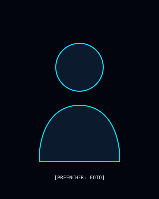

INFRAESTRUTURA DE TI
Windows, Windows Server, Active Directory, DNS, VPN, redes, servidores físicos e virtuais, backups e troubleshooting.
Atuo entre infraestrutura corporativa, suporte técnico avançado e desenvolvimento de soluções. Integro automação e IA quando elas resolvem problemas reais e melhoram processos.
12+ anos de experiência em TI corporativa.
Sou Wagner Persoli Filho, profissional de Tecnologia da Informação com mais de 12 anos de experiência em ambientes corporativos. Minha trajetória reúne suporte avançado, infraestrutura, administração de sistemas Microsoft e desenvolvimento de soluções digitais.
Também trabalho com automação e integração de Inteligência Artificial, buscando aplicações práticas para reduzir tarefas repetitivas, conectar sistemas e melhorar fluxos de trabalho.
Minha proposta de valor é unir conhecimento operacional de TI com capacidade de construir e integrar soluções.

Quatro pilares que conectam operação, engenharia e automação.
Windows, Windows Server, Active Directory, DNS, VPN, redes, servidores físicos e virtuais, backups e troubleshooting.
Suporte N1/N2/N3, gestão de incidentes, escalonamento, SLA e práticas de gestão de serviços alinhadas a ITIL.
Aplicações web, JavaScript, Python, APIs e integração entre serviços, com atenção à manutenção e à experiência de uso.
Automação de processos, integração de APIs e modelos de linguagem em soluções com propósito definido.
Seleção de experiências relevantes para infraestrutura, suporte e operações de TI.
Suporte avançado e sustentação de ambientes corporativos, administração de acessos e sistemas Microsoft, redes, VPN, DNS, servidores e gestão de incidentes.
Resultado mensurável: [PREENCHER: resultado comprovável desta experiência]
Atendimento técnico especializado para macOS, iOS, iCloud e AppleCare, com diagnóstico de problemas de software, hardware, rede e conectividade.
Resultado mensurável: [PREENCHER: resultado comprovável desta experiência]
Suporte a usuários em ambiente corporativo, registro e acompanhamento de chamados, diagnóstico de falhas e atendimento remoto e presencial.
Resultado mensurável: [PREENCHER: resultado comprovável desta experiência]
A linha do tempo destaca três experiências; o currículo reúne a trajetória completa.
Ferramentas agrupadas por área, sem percentuais artificiais de proficiência.
Windows · Windows Server · Active Directory · Microsoft 365 · Azure
DNS · VPN · Redes · Virtualização · Backups · ITIL · SLA
HTML · CSS · JavaScript · Python · Node.js · APIs REST
Git · CI/CD · Integração de APIs · LLMs · Gemini API
Um projeto publicado e três conceitos identificados claramente como propostas, não como entregas comprovadas.
Portfólio profissional com assistente contextual e arquitetura estática/serverless.
Proposta conceitual para organizar e automatizar fluxos de trabalho.
Proposta conceitual de painel para organizar indicadores e visualizações.
Proposta conceitual de visualização de dados para leitura de informações.
Removidos da vitrine principal: ELEVATE, FINANCE FLOW, METAVISÃO e CORE MARKETING. Não há evidência suficiente no material disponível para apresentá-los como projetos realizados.
O assistente Wagner AI permite consultar as informações profissionais publicadas, a stack, as experiências e os projetos documentados.
OBJETIVO Responder perguntas sobre o perfil com base no conteúdo documentado.
PRINCÍPIO Não inventar métricas, clientes, entregas ou qualificações que não estejam comprovados.
Centro Universitário ENIAC · 2012–2015
ITIL v3/v4 · Segurança da Informação · Fundamentos de Redes · Lógica de Programação (ICS) · Microsoft Certified Professional (MCP) · Client Support Analyst (UOL)
[PREENCHER: depoimento autorizado de uma referência profissional]